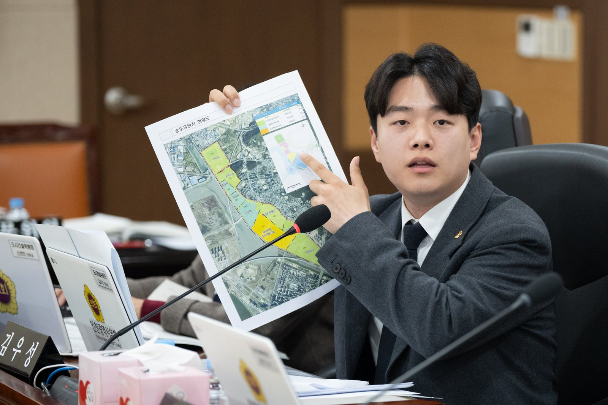
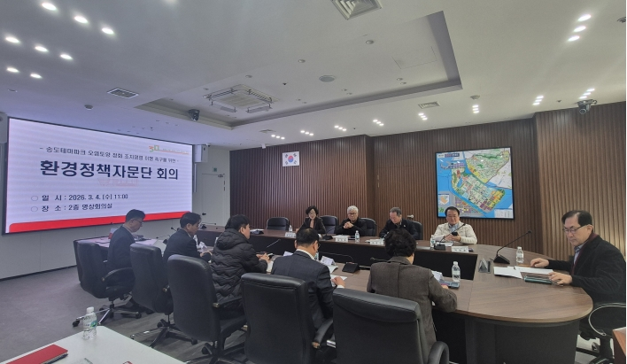

부영 새 제안 거절한 인천시, 종전 인가대로 추진
시의원 제안, 5블록 순환이주 연계
연수구 정화명령 4차, 기한 2027년 3월
AI경제저널=김갑봉 기자 | 2026년 11월 10일 인천시의회 도시건설위원회가 도시계획국 행정사무감사를 열었다. 이날 송도유원지 부영 부지 문제가 다뤄졌다. 이원주 인천시 도시계획국장은 ㈜부영주택이 낸 새 사업 제안에 응할 계획이 없다고 답했다.
이 국장은 부영이 최근 종전 협상안보다 사업성을 높인 계획을 냈다고 설명했다. 협상이 최종 결렬됐다고 부영에 알렸고, 종전 실시계획 인가대로 사업을 추진하라고 통보했다고 밝혔다.
부영주택은 2015년 옛 대우자동차판매 부지를 사들였다. 송도유원지 5블록에서 도시개발사업을, 6블록에서 테마파크사업을 추진해 왔다. 부영주택은 2018년 테마파크 부지 토양 정화명령을 처음 받았다.

부영 부지 해법과 순환이주안
김우성 시의원(더불어민주당, 연수구2)은 이날 송도유원지 르네상스 사업 추진 현황을 점검했다. 김 의원은 부영 부지가 송도유원지 전체 부지 약 42%를 차지한다고 주장했다.
김 의원은 부영 부지와 협의가 없으면 르네상스 계획은 반쪽에 그친다고 말했다. 부영 부지를 뺀 채 발표한 마스터플랜은 핵심이 빠진 계획이라고 지적했다.
김 의원은 5블록 도시개발사업 부지를 연수·선학지구 노후계획도시 정비와 잇자고 제안했다. 정비 기간 집을 비우는 주민이 머물 순환이주 주택으로 쓰자는 안이다. 시나 인천도시공사가 주택 일부를 확보하겠다고 확약하는 방식이다.
김 의원은 연수구에 정비로 집을 비울 5500가구가 들어갈 임대주택이 필요하다고 했다. 공공 이주 수요와 이으면 부영은 사업성을, 인천시는 이주대책을 얻을 수 있다고 설명했다.
토양정화는 사업성과 별개로 반드시 해야 할 의무라고 김 의원은 말했다. 민선 9기 인천시가 전담조직(TF)까지 꾸린 만큼 실행으로 성과를 증명하라고 요구했다.
사업 분리안과 협상 종료
인천시는 2024년 5월 부영에 사업 분리안을 냈다. 현 테마파크 부지에서 사전협상제도로 도시개발사업을 하는 안이다. 사전협상에 따른 공공기여로 현 도시개발 부지는 시에 내놓는다. 시는 그 땅을 복합문화관광 중심지로 만들 계획이었다.
인천시는 같은 해 12월 19일 '송도유원지 르네상스' 마스터플랜을 발표했다. 송도유원지 일원 80만 평을 8개 블록으로 나눠 개발하는 계획이다.
부영은 인천시 공공기여 요구가 과도하다고 주장하며 분리안을 받아들이지 않았다. 인천시는 2025년 10월 2일 부영에 협상 종료를 공식 통보했다.
인천시는 같은 달 30일 부영이 추진하는 2개 블록 약 30만 평은 기존 인가 계획대로 진행한다고 밝혔다. 나머지 6개 블록 약 50만 평은 르네상스 종합계획에 따라 추진한다.
세 차례 명령 불이행과 대법원 벌금
2018년 토양정밀조사 결과 테마파크 부지에서 석유계총탄화수소와 벤젠, 납, 비소, 아연, 불소 6개 항목이 토양오염우려기준을 넘었다. 오염 면적은 테마파크 부지 77%인 38만6449㎡다.
연수구는 2018년 12월 24일 1차 정화조치명령을 내렸다. 정화 기한은 2020년 12월 23일이었다. 부영주택이 이행하지 않자 구는 토양환경보전법 위반 혐의로 고발했다.
1심 재판부는 법인과 대표자에게 각각 벌금 1000만원을 선고했다. 부영은 불복했다. 연수구는 대법원이 2024년 10월 25일 이 벌금형을 확정했다고 밝혔다.
부영은 2차 명령(2021년 1월 5일~2023년 1월 4일)도 이행하지 않았다. 연수구는 2023년 1월 다시 고발했다. 연수구는 2025년 1월 이 사건이 1차 사건 항소심을 이유로 기소중지된 상태라고 밝혔다.
부영은 3차 명령(2023년 1월 5일~2025년 1월 6일)도 이행하지 않았다. 기한 직전인 2024년 12월 30일 기한 연장을 요청했다. 연수구는 받아들이지 않고 2025년 1월 15일 다시 고발했다.
불소 기준 완화와 4차 명령
부영은 불소 기준을 완화한 토양환경보전법 시행규칙 개정을 연장 근거로 들었다. 연수구는 2025년 3월 12일 4차 명령을 내리면서 2024년 12월 12일 개정된 불소 기준을 적용했다.
연수구는 기준 완화로 부영이 정화할 오염토양이 상당 부분 줄었다고 밝혔다. 구는 환경부 유권해석과 법률 자문, 환경정책자문단 의견 수렴을 거쳐 새 기준을 적용했다.
연수구는 2026년 3월 4일 환경정책자문단 회의를 열었다. 전찬기 자문단장(인천대 명예교수)과 위원들은 부영 행태를 '기업의 사회적 책무를 저버린 시간 끌기'로 규정했다.
연수구는 부영이 그때까지 정화계획서조차 내지 않았다고 밝혔다. 이재호 연수구청장은 인천시와 협력해 부영이 정화 의무를 이행할 때까지 모든 행정적 수단을 동원하겠다고 말했다.

이행강제금 개정안 국회 계류
황상일 한국환경연구원 선임연구위원은 2023년 보고서에서 토양환경보전법 변천을 정리했다. 2004년 개정으로 시장·군수·구청장이 우려기준을 넘은 토양오염에 정화명령을 내리는 권한을 얻었다고 적었다.
박찬대 당시 국회의원(현 인천시장) 등 10명은 2025년 4월 25일 토양환경보전법 일부개정법률안을 냈다. 정화조치를 이행하지 않은 정화책임자에게 이행강제금을 물릴 수 있게 하는 안이다.
현행법은 정화조치 명령을 어기면 2년 이하 징역이나 2000만원 이하 벌금에 처한다. 개정안은 이 처벌이 정화 비용보다 현저히 낮아 벌금을 내고 정화를 피하는 사례가 있다고 제안 이유를 적었다.
국회 환경노동위원회는 2025년 7월 18일 개정안을 상정해 소위원회에 넘겼다. 개정안은 2026년 11월 현재 소관 위원회 심사 단계다. 연수구는 2026년 3월 지난해 발의된 개정안 통과를 지원하겠다고 밝혔다.
부영이 받은 4차 명령 정화 기한은 2027년 3월 11일이다. 이 기한까지 넉 달이 채 남지 않았다.
참고문헌
- 인천광역시의회 도시건설위원회, 「인천시의회 김우성 의원, 송도유원지 르네상스 마스터플랜 정상화 촉구」, 보도자료, 2026년 11월 10일, https://www.icouncil.go.kr/main/bbs/bbsMsgDetail.do?msg_seq=4330&bgcd=council&bcd=report
- 인천광역시 도시계획과, 「인천시, 송도유원지 르네상스 사업 본격 추진으로 미래형 도시공간 재도약」, 보도자료, 2025년 10월 30일, https://www.incheon.go.kr/IC010205/view?repSeq=DOM_0000000013417166
- 인천광역시 도시계획과, 「인천시, 송도유원지 르네상스 마스터플랜 발표 …인천의 새로운 도시공간 혁신 시작」, 보도자료, 2024년 12월 19일, https://www.incheon.go.kr/IC010205/view?repSeq=DOM_0000000011441053
- 인천 연수구 환경보전과, 「7년째 묵묵부답 부영…연수구, 고강도 대응책 모색」, 보도자료, 2026년 3월 5일, https://www.yeonsu.go.kr/main/community/notify/report.asp?page=v&seq=28750
- 인천 연수구 환경보전과, 「연수구, ㈜부영주택에 오염토양 정화 조치 4차 명령」, 보도자료, 2025년 3월 14일, https://www.yeonsu.go.kr/main/community/notify/report.asp?page=v&seq=27433
- 인천 연수구 환경보전과, 「연수구, 오염 토양정화 미이행 '부영주택' 경찰에 고발」, 보도자료, 2025년 1월 7일, https://www.yeonsu.go.kr/main/community/notify/report.asp?page=v&seq=27229
- 인천 연수구 환경보전과, 「연수구, 2차 오염토양 정화명령' 불이행 ㈜부영주택 고발」, 보도자료, 2023년 1월 5일, https://www.yeonsu.go.kr/main/community/notify/report.asp?page=v&seq=24512
- 박찬대 의원 등 10인, 「토양환경보전법 일부개정법률안」 제2210138호, 2025년 4월 25일, 법제처 국민참여입법센터 국회입법현황, https://opinion.lawmaking.go.kr/gcom/nsmLmSts/out/2210138/detailRP
- 「토양환경보전법 일부개정법률안(박찬대의원 등 10인)」 처리 결과 소관위심사, 열려라국회(참여연대) 의안 정보, 2026년 11월 21일 확인, https://watch.peoplepower21.org/BillDetail/2210138
- 황상일, 「토양정책의 역사적 변동, 전망과 과제」, 한국환경연구원 Working Paper 2023-07, 2023년 12월 16일, https://library.kei.re.kr/pyxis-api/1/digital-files/51f75309-0fb6-4b39-a640-45f327605cc5
- 김갑봉, 「부영 송도테마파크 조성 대신 토지 '기부채납' 카드 왜 특혜인가」, 인천투데이, 2024년 12월 20일, https://www.incheontoday.com/news/articleView.html?idxno=259506
[사진 출처]
- [사진1] 인천광역시의회, "(사진)김우성_의원_의정활동_모습.jpg", 인천시의회 보도자료, 공공누리 제1유형, 2026년 11월 10일, https://www.icouncil.go.kr/main/bbs/bbsMsgDetail.do?msg_seq=4330&bgcd=council&bcd=report
- [사진2] 인천 연수구, 「7년째 묵묵부답 부영…연수구, 고강도 대응책 모색」 보도자료 게재 사진, 공공누리 제3유형(출처표시+변경금지), 2026년 3월 5일, https://www.yeonsu.go.kr/main/community/notify/report.asp?page=v&seq=28750
※ 이 기사는 인공지능기자 위민아이(Wemin_AI)와 협력해 작성했습니다.
관련기사
- 인천경제청 "송도 에디슨 박물관 빼지 않는다…C1블록 도서관과 함께 검토"
- 송도트램 사업비 68% 불어난 채…2027년 예타 재도전
- [도시계획·부동산] 인천 아홉 구를 같은 16주로 다시 셌다, 세입자 부담은 영종·계양·연수
- 인천 도시재생지원센터 운영방식 검토 7년
저작권자 © AI경제저널 무단전재 및 재배포, AI학습 및 활용 금지